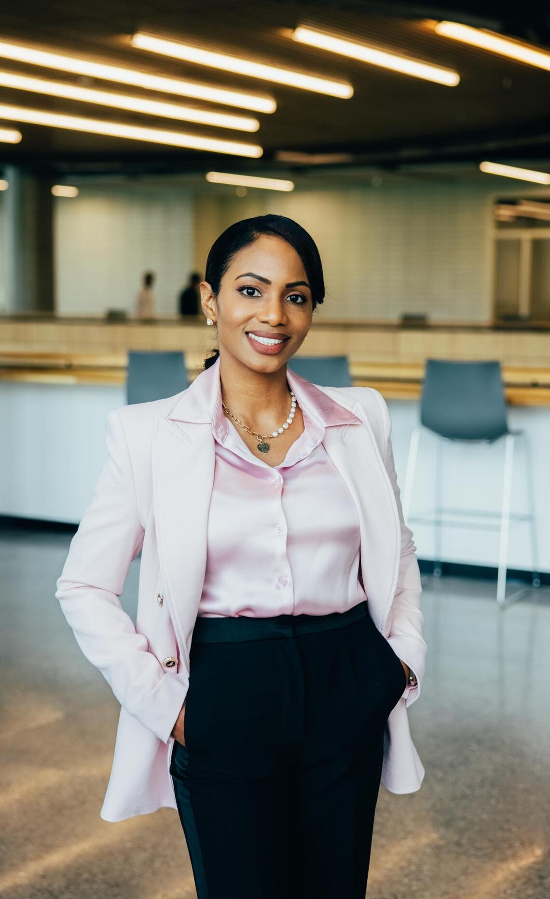

SAPL Team
Head Organizer

Cecile Kotyk
Dr. Marie Cecile Kotyk is an Assistant Professor and Design Justice Research Chair at the University of Calgary’s School of Architecture, Planning and Landscape. She is a housing scholar and practitioner with over 15 years of experience advancing equity in housing, homelessness, and community development...
Research Assistant

Zahra Khaniki
Zahra Khaniki is an award-winning architect whose work explores design justice, cultural identity, and spatial equity...
Research Assistant
Zainab Ahmed
[Bio Placeholder] Person B leads community-engaged learning initiatives across SAPL and supports pedagogical innovation.
Research Assistant and Marketing
Rein Gonzales
Aspiring urban designer focused on sustainable architecture, ecological restoration, and equitable city innovation...
Research Assistant and Marketing

Cordelia Yip
[Bio Placeholder] Person E supports youth co-design methods and climate-responsive architecture.